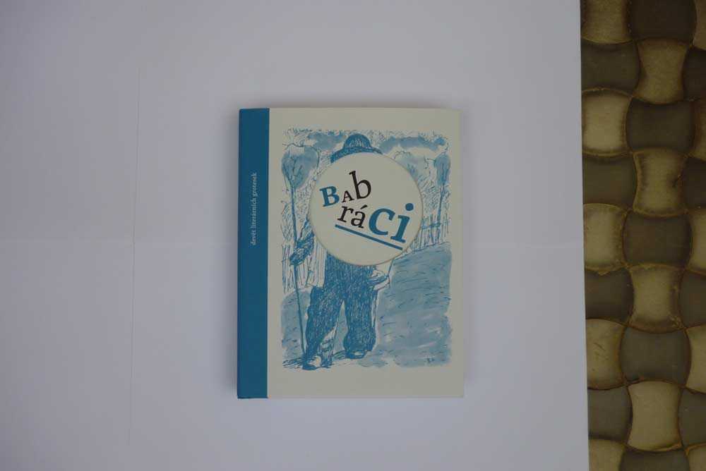
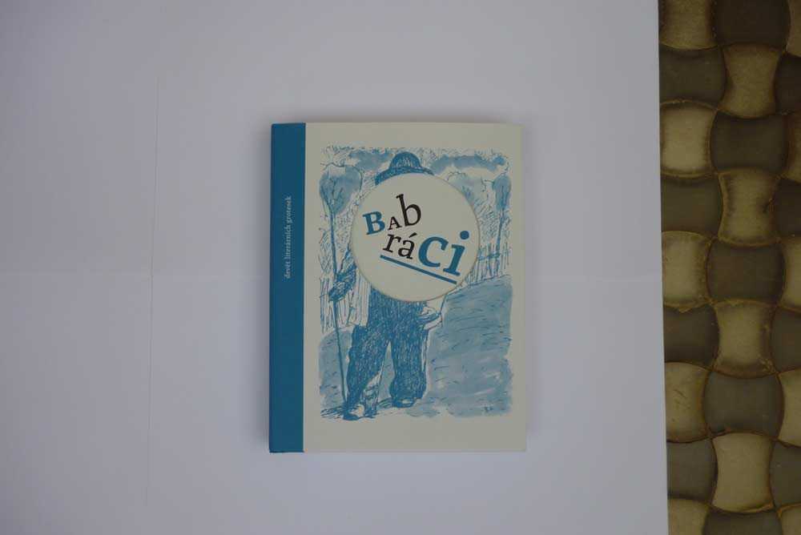
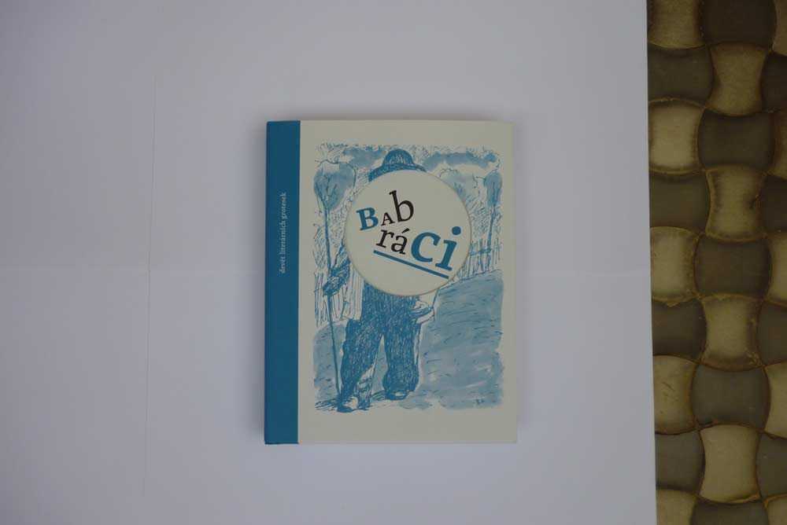

Fotografie před úpravou.
K pořízení fotografií jsem použil starší fotoaparát Panasonic Lumix DMC-S1. Má rozlišení 12mpx. Za dobrého osvětlení lze pořídit dobré snímky. Manuální nastavení expozice je bohužel omezené.
Jako první jsem hledal místo kde fotit. Jako nejlepší mi přišel balkón na západní straně během dopoledne, kde byl polostín a denní světlo bylo pěkně rozptýlené a stíny objektu měkké (při retuši jsem použil originální stíny z fotografie). Jako pozadí jsem použil slepené papíry z obyčejné kancelářské tiskárny.
Bílé pozadí slepené ze čtyř papírů A4. Šikovnější by bylo mít ještě malý stolek, aby scéna neležela na zemi a fotografování bylo komfortnější.
Pak jsem hledal ideální nastavení fotoaparátu. Začal jsem vyvážením bílé, které proběhlo vyfocením referenčního snímku bílého bodu (prostě jsem použil bílé pozadí). U všech fotoaparátů probíhá nastavení podobně (stačí se podívat do návodu jak přesně se to dělá). Citlivost jsem nastavil na ISO 100 (protože při vyšších hodnostách jde kvalita do háje). A nakonec jsem zkoušel expozici, která se bohužel nedá nastavit manuálně, ale lze alespoň zadat pomocí plus a minus mírné podexponování. Jde o to, aby nikde na fotce nebyla v bílé barevná hodnota 0. Já jsem to trochu přehnal a v nejsvětlejším bodě mám hodnoty okolo 170, lepší se pohybovat okolo 220. Ideální expozice je s vyšším clonovým číslem, aby obrázek byl pěkně ostrý a časem vyšším než 1/60, aby nebyl potřeba stativ.
V nejsvětlejším bodě fotografie by pořád měla být barevná informace. Pomůže vhodná expozice.
Výsledné fotografie před retuší vypadají takto, uvidíme co se mi s nimi povede udělat ve photoshopu. O tom bude další samostatný článek.

Fotografie před úpravou.